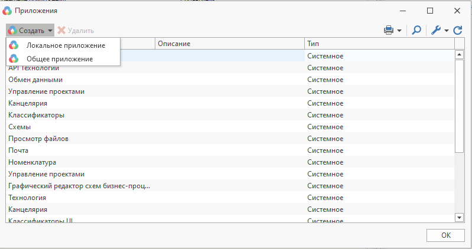

Создание и использование приложений |
Приложение реализуется путем создания библиотеки dll в любой среде разработки, поддерживающей .Net. Для того, чтобы библиотека расширения могла использоваться системой, в ней должен быть открытый класс, реализующий интерфейс IPluginLibrary.
Пример приложения с описанием можно найти в директории с установленным клиентом T-FLEX DOCs "..\Примеры использования API\Graphs"
Для подключения приложения к системе используется диалог "Управление приложениями" (меню "Сервис->Приложения")

Для добавления приложения необходимо воспользоваться соответствующей кнопкой и в открывшемся диалоге указать путь к сборке